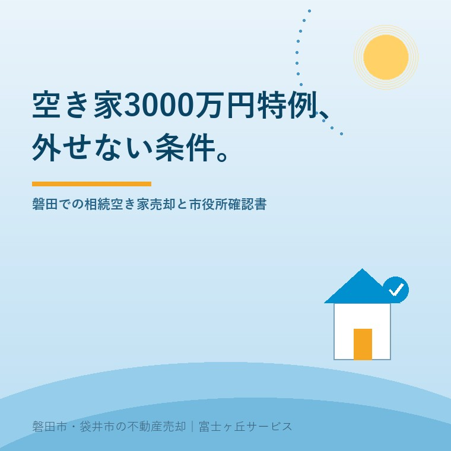

空き家3000万円特別控除の注意点｜磐田の相続売却で外せない条件
公開日：2026年9月11日 ｜ 著者：大石浩之（宅地建物取引士）

この記事の結論
Q. 相続した実家の空き家特例（3000万円控除）を使う注意点は？
A. 昭和56年5月31日以前の旧耐震建築であること、解体更地または耐震改修を行うこと、磐田市役所で事前に確認書の交付を受けることが必須条件です。 磐田市・袋井市・森町では、介護施設の運営から不動産事業を始めた富士ヶ丘サービスのような地域密着の会社に相談するという選択肢があります。
相続空き家の3,000万円特別控除とはどんな制度か
親が亡くなって相続した実家を売却した際、売却益（譲渡所得）にかかる所得税や住民税を最大3,000万円まで控除できる特例制度があります。これが『被相続人の居住用財産（空き家）に係る譲渡所得の特別控除の特例』です。
通常、不動産を売却して利益が出ると、所有期間に応じて約20％または約39％の税金が課されます。仮に実家が1,500万円で売れ、取得費が不明で利益が1,000万円出た場合、通常なら約200万円の納税が必要ですが、この特例が使えれば税額をゼロに抑えることができます。
しかし、この特例には厳格な適用要件があり、1つでも条件から外れると1円の控除も受けられなくなります。
外せない4つの必須条件と2024年以降の法改正ポイント
特例の適用を受けるための主要な条件は以下の通りです。
① 昭和56年5月31日以前に建築された建物（いわゆる旧耐震基準）であること。
② 相続開始の直前まで被相続人（親）が一人で暮らしていたこと（老人ホーム等に入所していた場合も一定の要件を満たせば対象）。
③ 相続から売却まで、事業・貸付・居住の用に供されていないこと。
④ 売却代金が1億円以下であること。
さらに重要な法改正点として、従来は『売却前に更地に解体するか耐震改修を終えていること』が必須でしたが、売買契約後に買主側が解体または耐震改修を行う場合でも特例が使えるよう要件が緩和されました。
ただし注意が必要なのは、相続人が3人以上いる場合、1人あたりの控除上限が3,000万円から2,000万円に引き下げられた点です。兄弟で均等に相続した場合の税額計算には十分注意してください。
磐田市役所での「確認書」取得と確定申告の段取り
この特例を利用するためには、税務署での確定申告の前に、物件が所在する自治体（磐田市内の物件なら磐田市役所）へ申請し、『被相続人居住用家屋等確認書』の交付を受ける必要があります。
磐田市役所建築住宅課等への申請には、登記事項証明書、被相続人の除票、相続人の住民票、売買契約書、解体前後の写真や解体工事の領収書など、多数の公的証明書を添付する必要があります。書類の審査には数週間を要するため、確定申告の直前に慌てないよう、売却決済が終わったら直ちに取得手続きに着手することが大切です。
実務家の本音：売却前のリフォームや片付けで失敗しないために
実務の現場でよくある失敗が、『売れるように綺麗にしよう』と良かれと思って数百万円かけてリフォームしてしまい、旧耐震のまま買主に引き渡して特例が使えなくなったり、解体費用が二重にかかってしまったりするケースです。
空き家特例を狙うなら、手を入れる前に必ず宅建業者や税理士に相談し、『解体更地渡しにするのか』『現状有姿で買主に解体してもらう特約を入れるのか』を販売計画の段階で確定させておくことが最大の防衛策です。
よくあるご質問
- 親が老人ホームに入所してから亡くなった場合も使えますか？
- 要介護認定を受けて入所し、かつ自宅を他人に貸したり事業に使わず維持していたなど、一定の要件を満たせば特例の対象になります。
- 兄弟3人で相続して売った場合、控除額はどうなりますか？
- 法改正により、相続人が3人以上の場合は1人あたりの控除上限が2,000万円（合計最大6,000万円）に調整されます。
- 市役所の確認書はいつ申請すればよいですか？
- 売買代金の決済・引き渡し（買主による解体等）が完了した後、翌年2月〜3月の確定申告までに磐田市役所へ申請して交付を受けます。

この記事を書いた人：大石浩之（宅地建物取引士・富士ヶ丘サービス代表）
磐田市・袋井市・森町で介護事業と不動産仲介を営む実務家。親の介護施設入居や実家じまいに伴う不動産売却を、売主様側の専任視点で一件ずつ丁寧に支援しています。ふじがおか実家カルテのご案内
参考にした公式情報（2026年9月確認）
- 国土交通省「宅地建物取引業法（媒介契約制度）」（2026年9月確認）
- 国税庁「被相続人の居住用財産（空き家）を売ったときの特例」（2026年9月確認）
- 磐田市公式「空き家対策・各種相談窓口」（2026年9月確認）
※税務・登記・法的手続きの個別判断は、必ず税理士・司法書士・所轄税務署等の専門家にご確認ください。